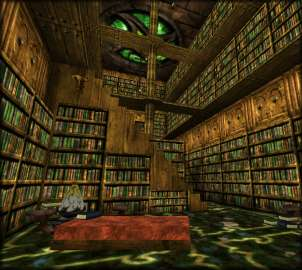

|

Dark Library
`There are two gates of sleep. Pushing through a pair of heavy wooden doors you find yourself in the Library. This place is huge! A high ceiling rises above you, braced with heavy oaken beams. The floor is covered in a dark green carpet and any spare wall space (very little!) is panelled in a honey coloured wood. Strangely, this place carries the atmosphere of age, despite the fact it must have been built quite recently. Most of the floor is taken up by the Stacks - huge, sliding bookshelves that line the walls and protrude out towards the centre of the room. Unpleasantly dark and heavy they look, carrying literally thousands of books, scrolls and parchments. Above the stacks is a raised walkway - fixed about half way up the wall and running right round the room. Before you is a heavily laden table and number of reading chairs. Ink bottles and an untidy nest of written notes, interspersed with battlements of books smother all available surfaces. To your left is a heavy reinforced door. Another door can just be seen at the far end of the library. Karne is obviously enthusiastic about his library. Well,here it is and yes I do have too many books! I've been collecting them for many years and it's nice to get them all in one place. Please feel free to browse - I'm sure there will be something of interest here. When you're finished, I'll see you back in the study. |

 © Michael.Wright 1999 karne@innocent.com
© Michael.Wright 1999 karne@innocent.com
(8=:[ plaintive plea - please don't steal my art work! ]:=8)

 |